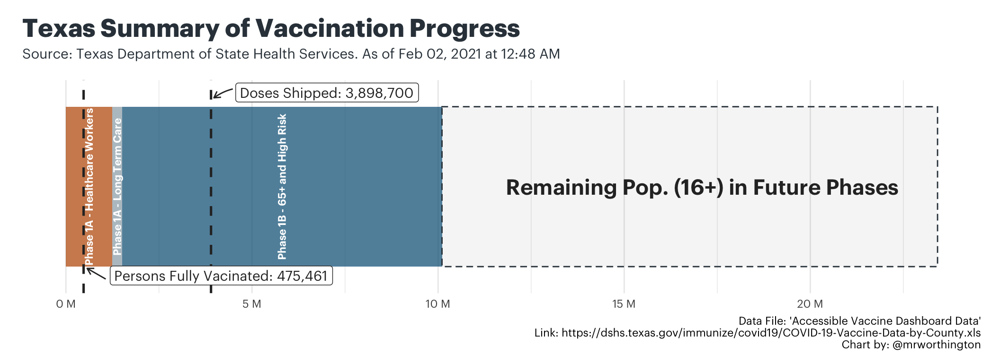
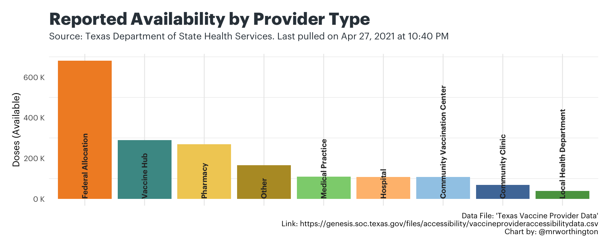

Pace Overview
Texas Summary
The chart attempts to capture a holistic snapshot of multiple data points related to state’s current efforts to vaccinate the population. At a high level, this chart is a single box that represents everyone in Texas aged 16 years and older. Within the box, you can see how much of is made up of eligible phases and how much of it is made up of the remaining population aged 16 years and older. And then, two lines mark the following:
- Doses Shipped: How many doses have been shipped compared to the entire 16+ population?
- Persons Fully Vaccinated: How many people have been fully vaccinated compared to the entire 16+ population?

National Comparison
Distribution Trends
The next chart captures where the reported supply of doses has been distributed, by the type of vaccine provider. The state classifies provider types, which allows to see very simply: what kinds of providers have recently received shipments of doses and how much were they shipped?

Similar to the last one, this chart focuses on reported availability. In other words, how much of the shipped doses are provider types reporting to be still available at the time the chart was generated?

Vaccine Pace Tracker
The last tool to track the pace of distribution is an interactive comparison of the state and counties across Texas. The tool allows users to track the statewide pace of vaccine progress and the county-level pace of vaccine progress. Because the state is only focused on the population aged 16 and above, we only measure progress against this population.
Question | Why do they only measure the population aged 16 and above?
According to the Texas Department of State Health Services, “At this time, experts do not know how safe the COVID-19 vaccine is for children. People 16 years old and older are currently eligible to get the vaccine if they are in a priority population.”
The two charts represent the entire populations of the state and selected county. In the boxes below, there are three indicators.
- Dose Distribution: This box shows how many doses have been administered out of the doses that have actually been allocated to that entity (either the state or the selected county).
- Daily Average: This is an ongoing calculation of daily averages that starts on Dec 15. The only thing it considers is how many doses are going into arms each day.
- When 70% is Vaccinated: Based on that daily average and knowing most of the approved vaccines require two doses, this box tries to guesstimate when 70% of the population aged 16 and older will be vaccinated. This is not a herd immunity projection, rather a look ahead as to when most of the population aged 16 and older will likely be vaccinated.
Photography Credit